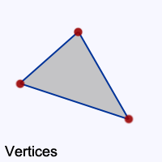
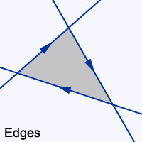

DAVE HD is rendering geometry defined by a set of edges, not vertices (most vector rendering cores do this internally but you have direct access to this notation using the DHD api). When using edges the driver assumes that the right side of an edge is part of the geometry when looking in edge direction from start to end. This definition ensures that a set of clockwise edges will form a valid geometry.
 
While non native to the DAVE HD there are still utility functions to setup geometry defined by vertices as this is often more convenient.
You can use the following functions to create geometry data for rendering:
|
Function |
Description |
|
Setup triangle with attributes. | |
|
Setup simple, non antialiased triangle. | |
|
Setup simple, antialiased triangle. | |
|
Setup non antialiased box. | |
|
Setup antialiased box. | |
|
Setup thin, non antialiased line. | |
|
Setup wide, antialiased line. |
Even though the utilities hide most of the internal details it is still recommended to familiarize yourself with how the hardware (and thus the driver) expects and uses the data on a lower level.
Edge information is stored and passed in dhd_edge_data_t structs as as set of three 32bit fixed point values (18bit fractional).
Usually these structures are not filled out manually but rather by using one of the following utility functions:
|
Function |
Description |
|
setup a simple non antialiased edge. | |
|
setup a non antialiased edge with automatic tiebreaking. | |
|
setup an antialiased edge. | |
|
setup an antialiased edge with increased precision. |
As given above the functions are ordered by CPU complexity from simple to complex, which usually directly translates to execution speed. So dhd_setup_edge_noaa_notie will be the fastest way to setup an edge and dhd_setup_edge_aa2 the slowest. In order to quickly pick the optimal variant check the following requirements:
Once an antialiased edge is setup it can be easily shifted (normal to the edge direction) by a single addition. This requires a precisely normalized edge (dhd_setup_edge_aa2)
Tie breaking rules are applied when using dhd_setup_edge_noaa (therefore also in dhd_setup_tri_attributes, dhd_setup_box_noaa and dhd_setup_line_noaa). These rules ensure:
Tie breaking will be decided via edge direction:
Setting the E_DHD_INVERT Edge flag inverts also the effect of tie breaking (as the hardware always ensures that the same edge drawn with and without E_DHD_INVERT aligns gaplessly)
Non antialiased edges are limited to a width and height of 2048 because of the limitations of the limiter x/y step registers. However, antialiased edges can be set up with a width and height of 4096 pixels.
Creating the four edges for a wide line and passing them to the driver for rendering could look like this:
dhd_prim_data_t prim; dhd_edge_data_t edges[4]; if (! dhd_setup_line_aa(my_device, x1, y1, x2, y2, width, &prim, edges, E_DHD_CLIP_FRAMEBUFFER)) { return; // no need to render, line is not visible } dhd_set_edge_buffer(my_device, edges, 0, 4); dhd_draw_array(my_device, 1, &prim, 0, 4, E_DHD_DRAW_FLAT);
In production code it is recommended to always use dhd_draw_array, but of course it is also possible to specify the bounding box manually and use dhd_draw in case of a single primitive. The setup function would still use a dhd_prim_data_t for storage but it can be manually passed to the driver like this :
dhd_prim_data_t prim; dhd_edge_data_t edges[4]; if (! dhd_setup_line_aa(my_device, x1, y1, x2, y2, width, &prim, edges, E_DHD_CLIP_FRAMEBUFFER)) { return; // no need to render, line is not visible } dhd_set_edge_buffer(my_device, edges, 0, 4); dhd_set_bbox( device, prim.m_xmin, prim.m_ymin, prim.m_xmax, prim.m_ymax, prim.m_ystart ); dhd_draw(my_device, prim.m_edgecontrol, 4, E_DHD_DRAW_FLAT);